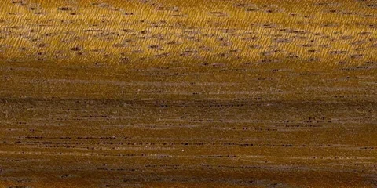
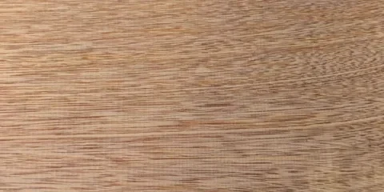

EL MATERIAL CAMBIA LA PIEZA
Materiales
y acabados.
Explora vetas, colores y superficies para imaginar tu proyecto con nosotros.
Descargar guía PDF

01 / MADERAS
Maderas sólidas
Cargando las muestras del catálogo…
No encontramos esa combinación.
Prueba otro nombre o restablece los filtros.
La elección se confirma
con una muestra.
El color en pantalla es orientativo. Al desarrollar tu proyecto, revisamos juntos el material, el acabado y las existencias del proveedor.
Conversar sobre mi proyecto